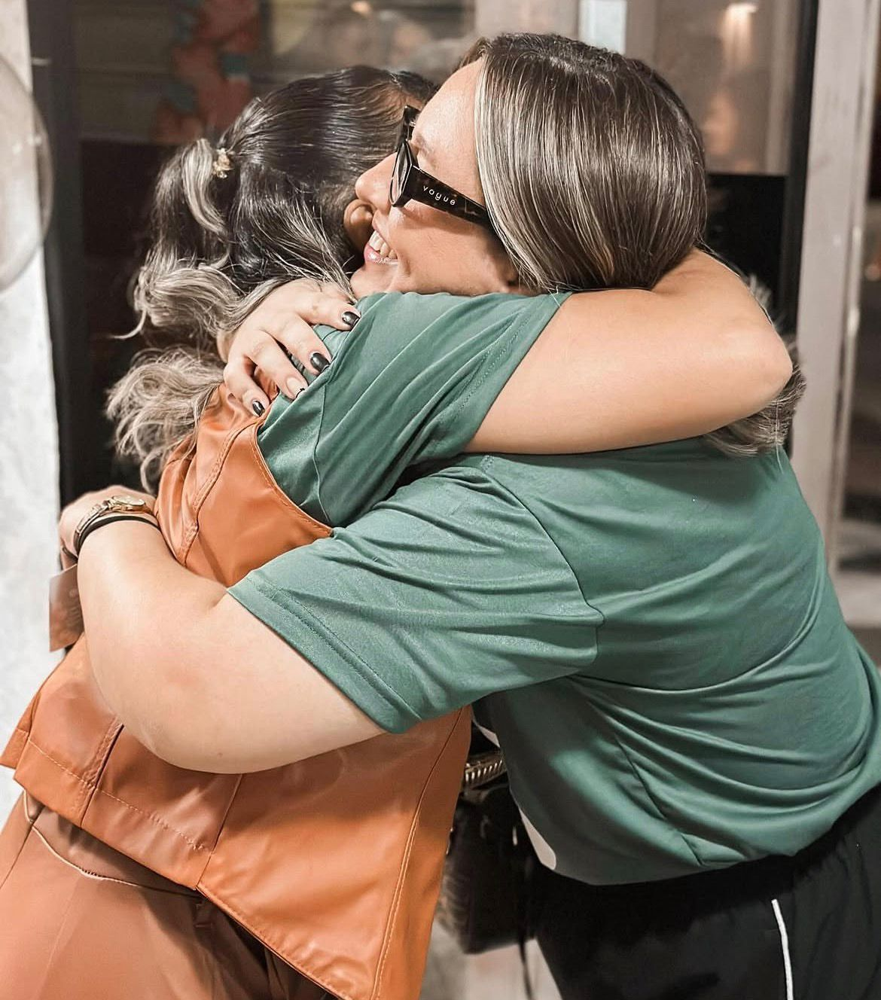
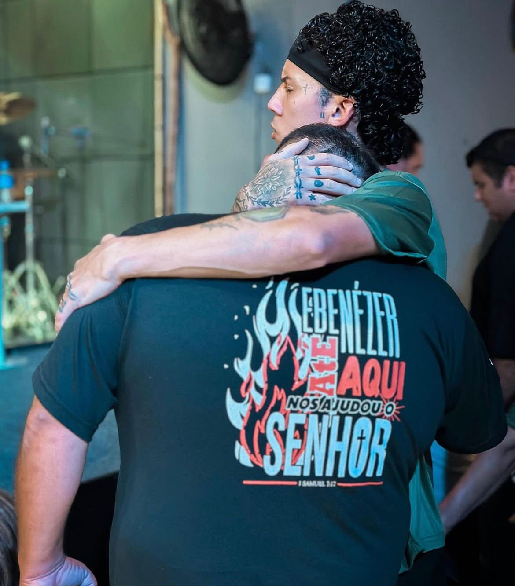

Bem-vindo
Casa de
Casa de
Oração
Um lugar para fé, comunidade e esperança.
Todos são bem-vindos aqui.
CONHEÇA NOSSA IGREJA
Quem Somos
Um lugar de fé, comunhão e adoração.


Quem somos
Sobre Nós
Somos uma comunidade acolhedora que se reúne para adorar, aprender e servir. Acreditamos que cada pessoa tem um propósito e queremos caminhar junto com você.

"Porque onde dois ou três estiverem reunidos em meu nome, ali estou no meio deles."— Mateus 18:20